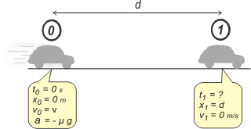

NO ME SALEN
PROBLEMAS RESUELTOS DE FÍSICA DEL CBC
(Leyes de conservación, trabajo, energía cinética)
|
|

|
 |
1.8- Valiéndose de consideraciones de trabajo
y energía cinética, demostrar que si el conductor
de un vehículo cuya masa es m y que marcha
con velocidad v por una ruta horizontal aplica a
fondo los frenos, la distancia en que se detiene
es d = v²/2µg, en donde µ es el coeficiente de rozamiento
dinámico entre sus neumáticos y el pavimento.
¿En qué factor se incrementa la distancia de
frenado, si el vehículo duplica su velocidad? |
|
| Este es un problema interesantísimo por muchos motivos. Uno de ellos es que resulta ideal para comparar las estrategias de resolución de problemas por la vieja y conocida de cinemática y dinámica, y por la estrategia de las consideraciones energéticas. Voy a resolverlo de ambas maneras. Primero por cinemática y dinámica... ¿me acordaré? |
|
|
 |
Arranquemos con la dinámica, eso me va a permitir encontrar una expresión para la aceleración en función de los datos del problema. Dinámica = DCL
Σ Fx = m ax → — Roz = m a
Σ Fy = m ay → A — P = 0
Por otro lado sabemos que...
Roz = μ . A |
|
|
|
Aunque el enunciado dice que se trata de un rozamiento dinámico, dejemos esa cuestión para un poco más adelante, ya vas a ver que no tenía mucho sentido esa proposición.
Si combinamos las tres ecuaciones tenemos, A ver... vamos haciéndolo juntos...
P = m g
A = P
A = m g
Roz = μ . m g
— m a = μ . m g
a = — μ . g
Ahora podemos ir a la cinemática del asunto y ver si encontramos una expresión para la distancia mínima de frenado... que acá llamé d. ¿Cómo era esa cuestión de la cinemática? Ah, ya sé... hay que empezar por un esquema. |
|
|
|  |
|
|
Se trata de un MRUV, así que volvemos a buscar los modelos de ese movimiento y reemplazamos las constantes del modelo por las constantes del movimiento, que están todas juntitas en el esquema, en el punto 0.
x = v . t — ½ μ . g t2
v = v — μ . g . t
Ahora le pedimos a estas ecuaciones que hablen del punto 1
d = v . t1 — ½ μ . g . t1²
0 m/s = v — μ . g . t1
y lógicamente desembocamos en un sistema de dos ecuaciones y dos incógnitas. Acá viene el álgebra. De la segunda despejo t1:
t1 = v / μ . g
Y esto lo meto en la primera:
|
|
|
| d = |
|
v² |
— |
½ v² |
|
|
|
| μ . g |
μ . g |
|
|
|
| ¿Te perdiste? Rehacelo vos solo a ver si llegás. Te quedan dos términos semejantes... los podemos juntar en uno sólo, que no es otro que el resultado que estamos buscando: |
|
|
| |
d = v² / 2 . μ . g |
costó, pero llegamos |
|
|
|
Ya que me tomé el trabajo de llegar hasta acá (en una guía de problemas de energía) aprovechemos y hagamos una discusión del resultado.
DISCUSION: La primera pregunta es obligada... ¿tiene las unidades que debería tener? Las tiene. ¿Y qué me dice físicamente? Todo: me dice, por ejemplo que si voy más rápido necesito mayor distancia de frenado... tal vez te parezca obvio, pero la física te esta advirtiendo de un peligro en ciernes... porque la distancia mínima necesaria de frenado no aumenta linealmente con la velocidad, ¡sino con su cuadrado! A ver si alguna vez aprendemos los peligros de las altas velocidades.
También me dice que es inversamente proporcional al coeficiente de rozamiento. Es decir... si me percato de la necesidad urgente de frenar el vehículo me conviene conservar la calma y frenar sin bloquear las ruedas. Las ruedas bloqueadas se comportan como patines, y el cálculo hay que hacerlo con el coeficiente dinámico, que siempre es menor que el coeficiente de rozamiento estático, μd < μe. Si queremos una distancia menor (para no llevarnos puesta a la abuelita, nos conviene usar el número mayor en el denominador, o sea, el μe, o sea frenar manteniendo el giro de las ruedas, sin bloquearlas. (Si te interesa el asunto te invito a que leas este breve artículo). Por el mismo motivo, me dice es un tanto riesgoso salir a la ruta con las gomas lisas... ejemmm...
Bueno... no quiero seguir dándome rosca. Dice varias cosas más esa expresión, pero vos podés descubrirlas.
RESOLUCION POR ENERGIA:
Ahora te propongo que volvamos a resolver el mismo problema pero desde una estrategia de Leyes de Conservación, trabajo y energía.
Elegimos dos eventos, los mismos 0 y 1 de allá arriba. Y aplicamos el sencillo teorema
WRes = ΔEC
No cabe duda de que la resultante es la fuerza de rozamieno (A y P se anulan mutuamente). El desplazamiento es d, el ángulo que forman es 180º y su coseno, -1
— Roz d = EC1 — EC0
— μ . m g . d = — ½ m v²
de donde: |
|
|
| |
d = v² / 2 . μ . g |
salió con fritas |
|
|
|
| |
|
|
| DISCUSION: Como ves el método de la aplicación de los teoremas de leyes de conservación es mucho más rápido y económico. Fundamentalmente el motivo es que nos desprendemos de un montón de información, vinculamos -energéticamente- dos estados, dos momentos, directamente, comparándolos del modo más sencillo, a través de una simple resta. Y despreocupándonos de cómo ocurrió la transformación, si fue rectilínea o curvilínea, variada o uniforme, ya no cuenta. Tenés una versión más light de este mismo ejercicio en BIO27, sin embargo hay algunos comentarios que complementan la información que volqué acá. Aprovechala. |
|
 |
YAPA: Acá tenés una tabla de coeficientes de rozamiento entre neumáticos nuevos (con buen dibujo) y diferentes tipos de calzada. |
|
| Pavimento |
Seco |
Mojado |
| Asfalto rugoso |
0,80 |
0,50 |
| Asfalto brillante |
0,70 |
0,40 |
| Adoquinado |
0,60 |
0,40 |
| Nieve |
0,60 |
0,30 |
| Hielo |
0,055 |
0,20 |
|
|
| |
|
| DESAFIO: A que no averiguás qué otra ventaja posee el sistema de frenado ABS, además de lograr el anti-bloqueo y la disminución de la distancia de frenado. |
|
| Algunos derechos reservados.
Se permite su reproducción citando la fuente. Última actualización oct-06. Buenos Aires, Argentina. |
|
|
|